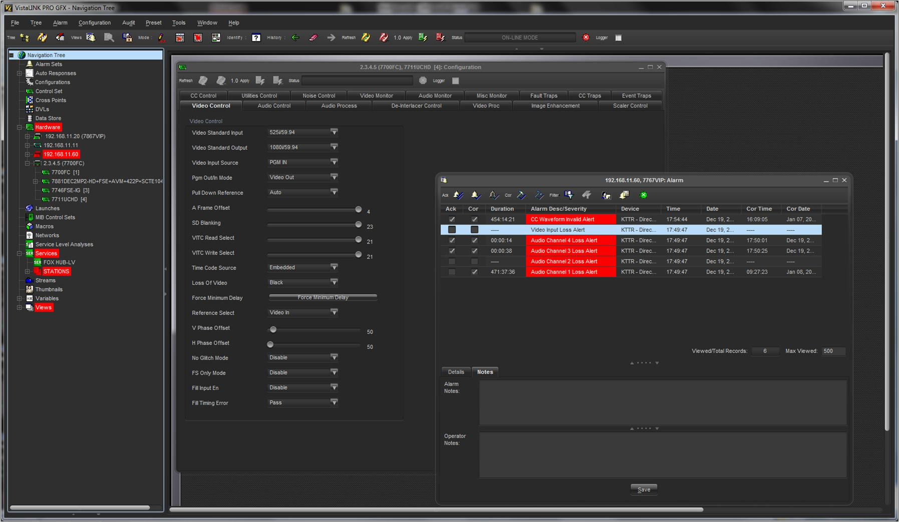
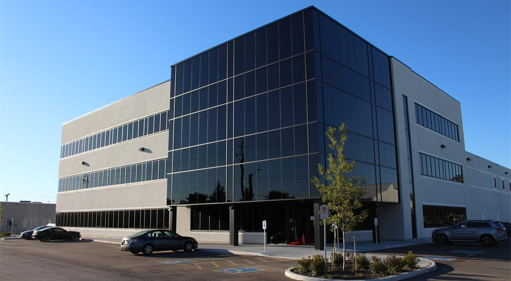
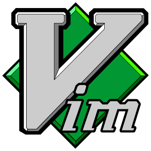

I worked at Evertz Microsystems from May 2017 to December 2017 for my first 8 month coop.
I returned again in May 2018 for another 4 months. Information related to my second coop at Evertz
is under the round 2 tab. This page will go over my experience working
for them and what I learned while working at Evertz. I will also go over my goals along with some of the things I learned
while working here.
I worked at Evertz Microsystems from May 2017 to December 2017 for my first 8 month coop.
I returned again in May 2018 for another 4 months. Information related to my second coop at Evertz
is under the round 2 tab. This page will go over my experience working
for them and what I learned while working at Evertz. I will also go over my goals along with some of the things I learned
while working here.
 Evertz Microsystems is a Canadian developer and manufacturer of broadcasting
equipment. Their main headquarters is based in Burlington, Ontario with other offices in the United
States, United Kingdom, Germany, United Arab Emirates, India, Hong Kong, China, Singapore, and Australia.
They currently employ over 2000 people at their head office. Evertz specializes in delivering end
to end broadcasting solutions with systems for content creation to distribution. They currently deliver
content to television, on demand services, IPTV and mobile.
Evertz Microsystems is a Canadian developer and manufacturer of broadcasting
equipment. Their main headquarters is based in Burlington, Ontario with other offices in the United
States, United Kingdom, Germany, United Arab Emirates, India, Hong Kong, China, Singapore, and Australia.
They currently employ over 2000 people at their head office. Evertz specializes in delivering end
to end broadcasting solutions with systems for content creation to distribution. They currently deliver
content to television, on demand services, IPTV and mobile.
In 2016 Evertz received an Emmy for their DreamCatcher Replay and production
suite. DreamCatchers 4k HDR live production tools have had a significant impact on the way sports
are being broadcasted. It was used to broadcast Super Bowl 50 and has made its way the NBA Replay
Center, MLB stadiums, NBC’s NHL Stanley Cup Final broadcasts, and NBC Sunday night football.
Visit
evertz.com for more information
 During my eight months as a student design engineer I worked on various
projects such as
VistaLINK PRO (VLPro), internal web tools, and some new products. VLPro is Java based which allowed
me to gain more experience in the language and learn a few tricks from my team lead. My first tasks
were mainly debugging issues reported by customers and engineers as I become more familiar with the
software I moved on to adding features such as graphing capabilities and custom web frames. Adding
the graphing support allowed for real time data analytics, I worked with an engineering team to support
their hardware along with a product team to build the component to their needs. Another major project
I worked on was a new Web Based product. This was written in Angular 2+ and allowed me to branch
off into a new area of development where I didn't have much experience. The last project I worked
on was a license management tool allowing customers to better control the licenses running on their
hardware.
The technologies I used at Evertz
- Java 8
- Java Server Pages
- Spring Framework
- HTML / CSS
- Angular 2+
- Javascript
- Git
- SVN
Out of the languages listed I only new Java and git at the beginning. Throughout
the work term I ended up learning a ton of new skills and becoming much more experienced with Java.
With Java I learned about lambda expressions, streams and async logic using rxJava. Overall my time
at Evertz contributed to me becoming a much stronger programmer and really expanded my capabilities
related to web development.
At Evertz I had a few goals in mind for the 8 months I was there. My first goal was to gain experience
in web development. More specifically I wanted to learn how to use HTML / CSS, Bootstrap and Javascript.
After working with those I wanted to branch out and try a Javascript framework. At Evertz I had the
opportunity to on various web products starting off with a basic information page that allowed me
to get a footing with HTML /CSS. Over time I was given bigger and more complex tasks building up
my knowledge of Javascript and eventually helped build a new project written in angular 2+. I succeeded
in this goal and have become much more confident in my web development capabilities.
My second goal was to gain more experience in java and learn Spring Boot.
In the beginning, I spent a few weeks dealing with bugs in order to become familiar with VistaLINK
PRO. While doing this I encountered things I hadn't seen before such as lambda expressions and streams.
I spent a little time learning these as they become very useful in later tasks. This new experience
led me to getting into async and parallel programming later on. As for Spring Boot I eventually picked
this up later on in the coop term when I was tasked to make some back end modifications to a new
web based product. I now believe I am a much stronger Java developer because of my time with Evertz.
My last goal at Evertz was to gain a better understanding of my surrounding
and how my work effects others. Over time I had the opportunity to work with product specialist and
hardware engineers across multiple projects where I gained a better understanding of how my work
integrates with other teams. Another big part of this was UI updates, part of my work dealt with
creating / updating the web UI. Small CSS changes had to applied across the company to maintains
a consistent UI. happy with where I ended at wit Evertz as it became much more apparent how certain
changes would break features used by other teams.

This was my second time at Evertz and I returned to the same position from my previous term. My 4 months here
where very similar to my previous term except we were much futher along in the development cycle for our main projects. This time around
I spent much less time working on VLPro and there for much less Java. Since coming back our teams focus shifted heavily to one of our new
projects. I had been working on this a little last summer which allowed me to hit the round running which was great since I was only here for 4
months. This new project was written in Angular 4 with a Java backend. I mostly worked on the front end and handled a lot of the UI since I had
the most experience with the UI libraries we are using.
technologies
- Java 8 + Spring
- HTML / CSS inclusing SASS
- Angular 4
- Javascript
- Git

Goals
This semester I had some more personal goals rather than technical since I have already worked at evertz and am quite familer with the
technologies used. Firstly I wanted to get more compfortable with linux as it would help streamline my workflow. Before working at Evertz
I was never a huge linux person but shortly after working more and more with server and web based technologies it became clear that windows
was proving to be a hassle to work with. Over the four months at Evertz I transfered more of my work to the linux subsytems on windows and
gradually learned new tricks and became more confortable using it day to day.
My Second goal was to become a stronger typer. I've wanted to do this for a while but never gotten around to practicing
because it's never been an issue for me. The goal was to become a faster typer and improve my accuracy. But early this summer one of my coworkers
started me on VIM by integrating it into my editors. Theres a lot to VIM and over the four months I leared a ton on how to use it. Starting off was
rough and slower than before but after a month or so I really started to pick up speed. Overall at the end of the semester my focus was less on improving
my typing speed and more on imrpving effeciecy through VIM. So I may not have completed my goal how I thought I would but I would still conisder it
successful.
Lastly I wanted to learn how to use docker because it was at the core of the project my team was working on. Shortly after creating
these goals my focuses changed within the team and I ended up focusing more on front end / UI development. This meant I no longer needed to work with docker
and instead of learning about it I focused on learning new things related to the front end. So this goal wasn't successful but I ended up learning a ton
about Angular and SASS so im happy with that trade.
So what did I lean?
 Despite the short work term and working on the same project as last summer I still managed to learn a ton. My biggest take away from this is summer
was improving my workflow by taking advatage of linux and VIM. Over the four months I also grew as a UI developer which is somthing I never thought of
my self as. I gained experience in Angular and SASS which is was a lot of fun to use. Overall I am a much stronger web developer coming out of this work.
Smal side note I also finally learned how to use chopsticks after many failed attempts so I'm pretty hyped about that.
Despite the short work term and working on the same project as last summer I still managed to learn a ton. My biggest take away from this is summer
was improving my workflow by taking advatage of linux and VIM. Over the four months I also grew as a UI developer which is somthing I never thought of
my self as. I gained experience in Angular and SASS which is was a lot of fun to use. Overall I am a much stronger web developer coming out of this work.
Smal side note I also finally learned how to use chopsticks after many failed attempts so I'm pretty hyped about that.
In conclusion, I had a lot of fun at Evertz and gained a ton of knowledge. This co-op allowed me to branch into web development and build up experience with many new technologies. I was able to push my self further and had the opportunity to apply what I learned in class. I also gained a lot of experience with team dynamics and learned how large teams work together. While at Evertz I was lucky enough to be included in a few events such as the ice man challenge (jumping in a pool of ice), trampolining and the company Christmas party. All of these were a great way to get to know my team and I will defiantly miss them. Overall Evertz has prepared me with a lot of the skills I'll need in the computer science field looking forward and am very thankful to have had the opportunity to work for them.
AcknowledgementA special thanks to my team lead Phillips Benjamin as he was outstanding leader and put a lot of faith in me. I also would like to thank my fantastic team: Matthew Fluder, TJ Walker, Vincent Liu and "Guelph 1" Jacob Young (Another guelph co-op).